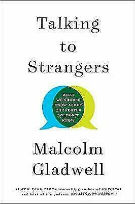

Library › Psychology & People
Talking to Strangers — Summary & Key Lessons

What we should know about the people we don't know — why our stranger-reading tools fail catastrophically.
📖 OPEN THE FULL INTERACTIVE BREAKDOWN →🌐 Read it in Hindi, Hinglish, Gujarati, Tamil & 22 more languages — free, with audio.
💡 The Big Idea
From Chamberlain misreading Hitler face-to-face (while distant analysts read him perfectly) to judges granting bail worse than algorithms, Gladwell's forensic question: why are humans so bad at reading strangers — and why does more contact often make it WORSE? Three system bugs. DEFAULT TO TRUTH (Tim Levine's research): we're wired to assume honesty until doubts pile past a threshold — which is why spies (Ana Montes penetrating the DIA), frauds (Madoff surviving multiple SEC looks), and abusers (Larry Nassar dismissed for years) operate for decades: it never takes genius, just the absence of ENOUGH doubt; the whistleblower who suspects everyone is right occasionally and dysfunctional daily — society RUNS on default-truth, and its exploitation is the tax we pay for trust. TRANSPARENCY MYTH: we believe demeanor broadcasts inner state (nervous = guilty, calm = innocent) — but people are 'mismatched': innocent Amanda Knox acted 'weird' and lost years to it; practiced liars act perfectly 'matched.' Judges seeing defendants do WORSE than algorithms seeing only files because faces are noise masquerading as signal. COUPLING: behavior is welded to context — crime to specific street corners, suicide to specific means (Sylvia Plath and town gas; when Britain switched gases, suicides didn't 'displace,' they DROPPED) — so judging strangers stripped of their context isn't partial understanding; it's misunderstanding with confidence. The prescription: humility (accept you can't read minds), caution with demeanor-evidence, and respect for context — talk to strangers, but 'with caution and humility.'
🧠 The 6 Key Lessons
Lesson 1: Default to Truth: Why Good People Miss Obvious Frauds
Parts 1-2
Levine's deception research found the engine of human trust: we don't evaluate honesty statement-by-statement — we ASSUME it, and only flip when doubts accumulate past a personal threshold. This isn't gullibility; it's infrastructure (a society of full-time doubters couldn't run a bus stop). But it means deception's winning strategy is simply: be plausible enough that doubts never QUITE add up — which describes every long-running fraud in history. The corollary Gladwell hammers: the people who DID catch frauds early (Markopolos on Madoff) weren't smarter — they were constitutionally suspicious outliers whose disbelief-first wiring also made them wrong and exhausting elsewhere. The lesson isn't 'trust no one' (unlivable) — it's institutional: build verification SYSTEMS that don't depend on any individual overcoming their truth-default (audits, separation of duties, mandatory reporting), because the default is unbeatable at the personal level and shouldn't need beating at the systemic one.
📖 Example: Ana Montes — the Cuba analyst who was Cuba's spy INSIDE the Defense Intelligence Agency for 17 years: colleagues noticed oddities (she'd leave during crises, her assessments oddly favorable to Havana), a counterintelligence officer even questioned her years… Read the full example →
⚡ Do this: Stop asking 'how did they not see it?' about others and audit your own exposure: for your highest-stakes trust relationships (finances, partnerships, key hires), install one verification that doesn't require suspicion to trigger — annual independent review, references actually called, two-person controls. Trust the person; verify the system.
Lesson 2: The Transparency Myth: Faces Are Not Windows
Parts 3-4
The 'Friends fallacy': on TV, inner states are performed on faces — real life is not cast that way. Research: people barely beat chance detecting lies from demeanor, and trained professionals (police, judges, TSA) mostly do no better while being FAR more confident. The killer concept is MISMATCH: some innocent people present 'guilty' (anxious, odd, flat — Amanda Knox's convictions-by-vibe), some guilty present 'innocent' (charming, calm — every successful con artist by definition), and our demeanor-based judgments systematically punish the mismatched innocent while clearing the matched guilty. Gladwell's most uncomfortable data: Mullainathan's study — an algorithm using ONLY the case file out-predicted bail judges who saw the defendants, meaning the face-to-face information judges prize has NEGATIVE value: it adds noise dressed as insight. Application beyond courtrooms: interviews (confident ≠ competent), first impressions, 'I looked him in the eye' diplomacy — wherever demeanor gets weighted, mismatched people get destroyed and polished people get promoted.
📖 Example: Amanda Knox, Gladwell's centerpiece of mismatch: no physical evidence tied her to her roommate's murder — the case was built on WEIRDNESS: she did cartwheels at the police station, kissed her boyfriend outside the crime scene, didn't grieve on script.… Read the full example →
⚡ Do this: In your next three evaluative settings (interview, negotiation, first meeting), practice file-over-face: write your assessment from the record/work-sample BEFORE the meeting, then note how the in-person impression tries to move you — and require actual evidence, not vibe, to update. Separately: extend grace to the awkward; mismatch isn't guilt.
Lesson 3: Coupling: Behavior Doesn't Travel Without Its Context
Part 5
The final bug: we treat strangers' behavior as pure character, when much of it is COUPLED to specific places, moments and means. The suicide evidence is the paradigm: when Britain replaced deadly town gas (the era's leading method — Sylvia Plath's) with natural gas, suicides didn't displace to other methods as 'character theory' predicted — thousands of deaths simply never happened; the impulse was coupled to the easy means. Crime mapping shows the same: half a city's crime concentrates on ~3-4% of street segments (Weisberg's law), yet policing and prejudice treat it as diffused character. For reading strangers, coupling demands the question our snap judgments skip: WHERE and WHEN is this person — what is their behavior attached to? The student drinking catastrophically at one campus bar, the colleague explosive only under one manager, the 'difficult' relative only difficult in one house — remove or change the coupled context and the 'character' transforms. Judging a stranger without their context isn't a rough draft of understanding; it's often the exact opposite of it — and the humility Gladwell lands on is operational: assume you're missing the context, because you are.
📖 Example: The Kansas City policing experiments frame Gladwell's close: preventive patrols spread citywide changed nothing — but concentrating on the exact micro-blocks where gun crime coupled produced real drops; the SAME tactics, decoupled from the hotspots (as they… Read the full example →
⚡ Do this: Before your next hard judgment of a person, force the coupling question in writing: 'what context is this behavior attached to — and have I ever seen them outside it?' If the answer is no, downgrade your confidence by half and change the context before changing your verdict on the human.
Lesson 4: The Sandra Bland Case: When All Three Bugs Fire at Once
Part 5: The Kansas City Conclusions
Gladwell frames the entire book with one traffic stop: Sandra Bland, a Black woman pulled over in Texas in 2015 for a lane-change signal, arrested after the encounter escalated, found dead in her cell three days later. His autopsy shows all three bugs detonating together: TRANSPARENCY — officer Brian Encinia read Bland's irritation and agitation (she was a mismatched stranger: distressed from life circumstances, expressive by nature) as danger signals, because his training literally taught him demeanor-decoding ('curiosity tickets': stops on vibes); DEFAULT TO TRUTH INVERTED — modern proactive policing trains officers OUT of truth-default into systematic suspicion, making every civilian a potential threat and every anomaly evidence; COUPLING IGNORED — the aggressive-stop tactics that showed results on a few high-crime blocks in Kansas City were exported EVERYWHERE, decoupled from the context that justified them, turning millions of routine encounters (in low-crime areas, where hit rates approach zero) into suspicion theater. The lesson Gladwell insists on: Bland's death wasn't one bad officer — it was a SYSTEM built on every mistake the book catalogs, scaled by policy. When institutions weaponize our stranger-reading bugs instead of correcting for them, tragedy stops being an accident and becomes a schedule.
📖 Example: The Kansas City gun experiment's afterlife is the case's engine: researchers found concentrated, aggressive patrols in a tiny 'hot' district measurably cut gun crime — a coupling-aware success. But policing culture exported the TACTIC minus the COUPLING:… Read the full example →
⚡ Do this: Apply the systemic lens to your own institution (company, school, community group): find one policy that quietly trains people to distrust by default, judge by demeanor, or apply a context-specific tool universally (blanket monitoring, zero-tolerance rules, screening theater). Calculate its real 'hit rate' — how often it catches what it claims versus how many innocents it processes. If the ratio embarrasses you, champion its redesign this quarter.
Lesson 5: The Default to Truth: Why We're Built to Believe, Not Verify
Part 1: The Problem
Gladwell's unsettling opening: humans default to truth — we're wired to believe what people tell us, because the alternative (constant suspicion) would make society unlivable. This is usually a feature: trust is what lets us function. But it becomes a bug when the person is lying, and the research shows most of us can't reliably detect deception — even professionals (judges, police, CIA officers) perform barely better than chance. The lesson is humbling: 'trust your gut' on people is often just your bias talking. The practical takeaway isn't cynicism — it's humility: know that you can't reliably read liars, so build verification systems (check the facts, not the face) for the decisions that matter.
📖 Example: Gladwell walks through the case of Bernie Madoff — brilliant investors and SEC officials met him, liked him, trusted him for decades, while the numbers (if anyone had actually audited them) were impossible. The faces were warm; the arithmetic was screaming. Read the full example →
⚡ Do this: For one important decision this month, consciously verify the substance instead of the vibe: check the numbers, the references, the written record — and note how much your 'gut' was really just confidence in the person's presentation.
Lesson 6: The Case for Context: Coupling, and Why the Same Person Acts Differently
Part 3: The Context
Gladwell's most constructive idea: behaviour is 'coupled' to context far more than to character — the same person acts completely differently in different situations, which is why 'judging someone by who they are' is unreliable and why changing environments changes people. The drunk driver, the honest citizen, the aggressive teen, the calm professional — all exist in the same person depending on the situation. The practical implications are huge: to understand (or change) behaviour, examine the context, not just the individual; to prevent bad outcomes, change the situation (remove the guns, the alcohol, the pressure) rather than just condemning the person. The deepest lesson is compassion: people are less 'bad' or 'good' than we think — they're responsive, and the context is the lever.
📖 Example: Gladwell's analysis of suicides on the Golden Gate Bridge showed that the jumpers' behaviour was coupled to the bridge — the same despairing people, without the means at hand, mostly didn't die by suicide. Changing the context (barriers) saved lives that… Read the full example →
⚡ Do this: Think of one person whose behaviour frustrates you. List three features of their context (stress, environment, incentives) that could explain it — and one context change that might improve it, starting with your own reactions.
✅ 5-Step Action Plan
- Keep the truth-default for people; build suspicion into systems instead.
- Weight files over faces: work-samples and records before charisma and eye contact.
- Protect the mismatched: awkward is not guilty; polished is not innocent.
- Ask the coupling question — what place, moment, or means is this behavior welded to?
- Talk to strangers anyway: with caution, humility, and half the confidence.
⚠️ When This Doesn't Work
Gladwell's 'default to truth' explains how billions get stolen — Nirav Modi didn't break into Punjab National Bank; he was walked in, because bankers defaulted to truth for a charming, famous, well-connected stranger, for eight years, to the tune of ₹14,000 crore. The book's lesson — stop trusting your read of strangers — is vital and paralyzing if taken fully: you can't run a bank, a marriage or a country on total suspicion. The answer isn't trusting less; it's verifying more on anything that matters, no matter how charming the stranger.
💀 The Graveyard Proves It
💎 Nirav Modi — ₹14,000 Crore Vanished Through One Bank Terminal. Burn: ₹14,000 crore ($2B) from PNB. Read the full case study →
💬 Best Quotes from Talking to Strangers
- “We have people struggling to read the minds of strangers and, on the strength of that reading, making life-altering decisions.”
- “The right way to talk to strangers is with caution and humility.”
- “Default to truth is not a flaw. It is the trait that makes society possible.”
Interactive version: mark lessons as read, listen in your language, share quote cards.